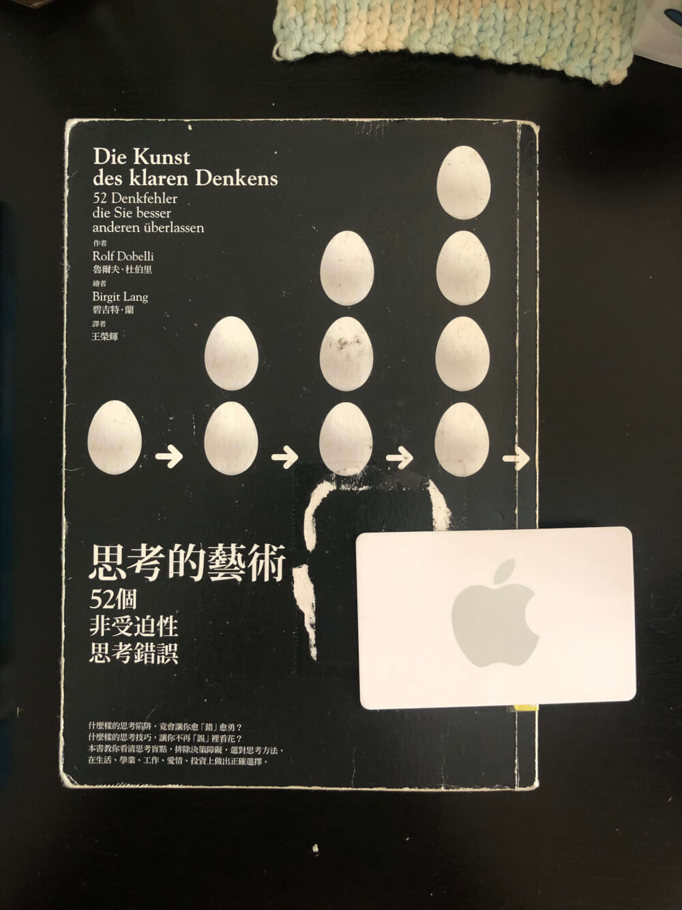
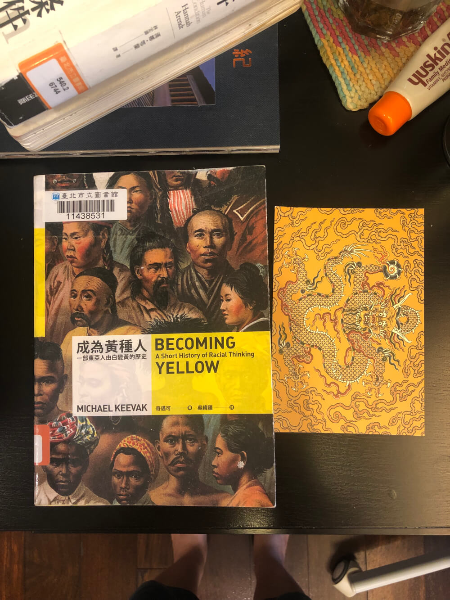
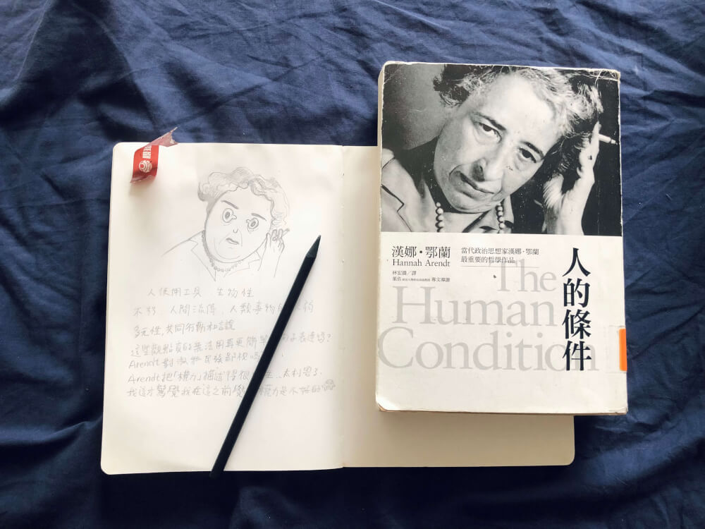
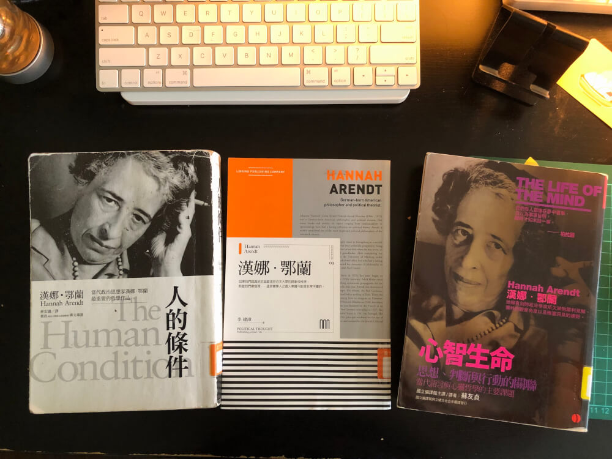

2021 夏季閱讀
我的隱形收入！

最近很喜歡把圖書館上限額度借滿，紙本跟電子書是分開算，三、四天就要讀完一本才來得及還。在睡前一兩小時讀紙本書可以製造遠離藍光的機會，而紙本書的樂趣之一是搭配書籤。
末世男女
原文書名在封面上被寫得像 “ORYXAND CRAKE” 真的覺得滿傻眼，奇怪的咖啡色書皮搭配上跟第一次世界大戰廢墟感的剪影，這裝幀設計跟內容很不相襯，希望以後會有改版。
我建議不要讀序，我覺得算有暴雷。
搭配的書籤是好幾年前入境紐約填的卡，但好像是德文的看不懂。
思考的藝術
封面很漂亮，但 52 個太多了！搭配的書籤是 Apple gift card。
我覺得確認偏誤是最難克服的。
確認偏誤是把新資訊解釋成合乎既有理論、世界觀或信念的傾向
「人們最會做的事，無非就是把新資訊過濾到讓既有的想法得以完成無缺地保持下去」
我覺得這是最難的原因是，這似乎要跟轉換框架分開，如果我的想法跟新資訊有牴觸，我就放棄想法而接受新資訊，這樣似乎也行不通吧？
如何對付確認偏誤？寫下自己的信念，接著找出否證證明，保持幹掉自己鍾愛的寶貝理論的勇氣，對自己誠實。
成為黃種人
感覺超過一半的頁數在描述歐洲男人一開始覺得「漢人」是白色的，然後改變心意覺得是黃色、橄欖色、深棕色、黑色，不斷的改變想法來來回回。
有個英國男人 John Beddoe 提出英國種族的黑色指數（Index of nigresence），目的是為了證明愛爾蘭人比英格蘭人更黑，或更像黑人。這個男人貝多曾表示光憑腿的膚色無法分辨英國或中國人。
還有德國男皇威廉二世提出的「黃禍」，結果這個詞竟然被清國末期的排滿人士拿來自嗨，把黃禍這個——歐洲男人用來種族歧視的詞當作稱讚。梁啟超、康有為這些非滿族男性忙著發明歷史，他們成功把黃帝、炎黃子孫中華民族這些概念讓中國國民黨跟中國共產黨買單，方便用來壓迫他們想壓迫的族群。
梁啟超跟他的大票男性朋友，因為「黃」帝、「黃」河，而欣然接受自己是黃種人，接著把歐洲男人的歧視修改出自己的版本：在他們自己的世界裡定義黃種人跟白種人一樣高貴尊絕不凡，並歧視深色皮膚的人。
真的是哭笑不得。
搭配的書籤是故宮的明信片：清國男皇帝的黃色的龍。
人的條件
書籤是台中冰店小涼房的名片。
我真的覺得鄂蘭是天才，很幸運可以讀他的書，因為我可能想不出他提出的那些角度來觀察人類。但是這本書大部分段落很難，我覺得這是要長大才能完全看得懂的書。
如果你曾經有感覺過上班很浪費生命、總覺得生活好像哪裡不太對的話，我非常非常推薦拜託讀讀看人的條件。
我覺得這本書可以幫人找到人生解答。
怎麼會有人有辦法那麼細膩的想出定義自由、工作跟政治是什麼？我覺得鄂蘭的定義能夠帶出身為人好的那一面。
因為讀紙本書的時候我不想再看螢幕，只好手寫閱讀筆記。
《人的條件》真的太難了，中間那本《漢納鄂蘭》非常好讀，可以說是鄂蘭說明書。《心智生命》是剛借閱的，完全還沒開始。
